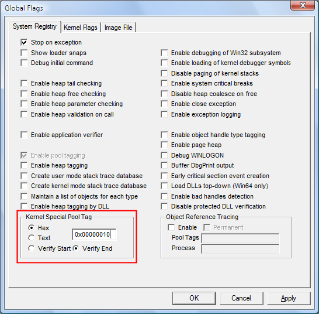

You can request special pool for allocations within a specified size range.
In Windows Vista and later versions of Windows, you can also use the command line to request special pool by pool tag. For information, see GFlags Commands.
To request special pool by allocation size
-
Select the System Registry tab or the Kernel Flags tab.
On Windows Vista and later versions of Windows, this option is available on both tabs. On earlier versions of Windows, it is available only on the System Registry tab.
-
In the Kernel Special Pool Tag section, click Hex, and then type a number in hexadecimal format that represents a range of sizes. All allocations within this size range will be allocated from special pool. This number must be less than PAGE_SIZE.
-
Click Apply.
The following screen shot shows an allocation size entered as a hexadecimal value.
